СИСТЕМ ХӨГЖҮҮЛЭЛТИЙН ТЕХНИКИЙН ТАЙЛАН
ГАЗРЫН УДИРДЛАГЫН НЭГДСЭН МЭДЭЭЛЛИЙН СИСТЕМД СУУРИЛСАН ГАЗАР ЧӨЛӨӨЛӨЛТИЙН НЭГДСЭН СИСТЕМ
Газар чөлөөлөлтийн үйл явц, нэгж талбарын бүртгэл, үнэлгээ болон нөхөх олговрын тооцооллыг нэг цэгээс удирдах вэб систем
Бүрэлдэхүүн: government-frontend (Next.js) · government (Go API) · PostgreSQL + PostGIS · GeoServer
Тайлан үүсгэсэн: 2026-07-17 · сүүлд шинэчилсэн: 2026-07-25
Энэхүү систем нь газар чөлөөлөлтийн ажлыг цаасан бүртгэлээс бүрэн цахим хэлбэрт шилжүүлсэн нэгдсэн вэб систем юм. Газар чөлөөлөх төлөвлөгөө батлагдснаас эхлээд нөлөөлөлд өртсөн нэгж талбар бүрийг бүртгэх, хөрөнгийн үнэлгээ хийлгэх, нөхөх олговрыг тооцож батлах, эцэст нь газрыг чөлөөлөх хүртэлх бүх алхам нэг системд, хяналттай дарааллаар явагдана.
Ажлын алхам бүр тодорхой эрх бүхий хүнээр хийгддэг: мэргэжилтэн бүртгэнэ, үнэлгээний байгууллага үнэлгээгээ оруулж илгээнэ, санхүүгийн мэргэжилтэн баталгаажуулна. Аль нэг төлөв өөрчлөгдөх бүрд холбогдох хүмүүст мэдэгдэл шууд очиж, үйлдэл бүр хэн, хэзээ, хаанаас хийснээр нь бүртгэгдэж үлдэнэ (аудит лог). Газрын зураг дээр талбар бүрийн явц өнгөөр ялгарч бодит цагт харагдана.
Гол үзүүлэлтүүд: 187 үйлчилгээний цэг (API endpoint), 50 өгөгдлийн хүснэгт, 24 дэлгэц, 220 автомат тест. Хөгжүүлэлтийн төлөвлөгөөний 50 ажлын 16 нь бүрэн хийгдсэн, дахин 21 ажлын техникийн урсгал мок (суулгасан) өгөгдөл/дотоод бүртгэлээр бүрэн ажиллаж байгааг баталгаажуулсан (жинтэй гүйцэтгэл 80% гэж тооцов). Жинтэй нийт гүйцэтгэл 32.8/50 (66%). Үлдсэн 10 ажилд Газрын удирдлагын системийн (ГУС) холбогдох ямар ч код одоогоор бичигдээгүй, 3 ажил бие даасан хүлээгдэж байна.
1.1 Хөгжүүлэлтийн явцын үзүүлэлт
1.2 Төлөвлөгөөний биелэлтийн товч
1.3 API интерфейс, эндпойны товч
1.4 Домэйн тус бүрийн хүснэгтийн задаргааны товч
4.1 Бүтцийн ерөнхий диаграм (ERD)
4.2 Гол хүснэгтүүдийн дэлгэрэнгүй
4.3 Домэйн тус бүрийн хүснэгтийн бүрэн задаргаа
4.4 Гол харилцаанууд ба онцлох дизайны шийдлүүд
5. API интерфейс — 187 endpoint
6. Аюулгүй байдал, эрхийн удирдлага
6.3 Роль тус бүрийн цэсний хандалт
6.4 Мэдээлэлтэй ажиллах эрхийн матриц
7. GIS — газарзүйн мэдээллийн интеграци
9. Цэс, дэлгэцүүдийн дэлгэрэнгүй тайлбар
9.2 Газар чөлөөлөлт — жагсаалт
9.3 Газар чөлөөлөлтийн дэлгэрэнгүй — 7 таб
9.4 Нэгж талбарын түүх — нэгдсэн жагсаалт
9.5 Нэгж талбарын дэлгэрэнгүй — 6 таб
9.5.1 «Нөхөх олговор» таб — үнэлгээний 3 дэд таб
9.5.2 «Эх хэвлэл» — хэвлэх загварууд (11)
9.10 Миний чөлөөлөлтүүд (мэргэжлийн байгууллага)
9.11 Тохиргооны 8 модуль (админ)
9.12 Мэдэгдлийн систем — бодит цагийн
9.13 Аудит лог — үйлдлийн мөрдлөг
10.1 Бүрэн хийгдсэн ажлууд (16)
10.2 ГУС интеграци хүлээгдэж буй — мок-оор бэлэн урсгалтай (21)
10.3 ГУС-аас бүрэн хамааралтай хүлээгдэж байгаа ажлууд (10)
10.4 Бусад хүлээгдэж байгаа ажлууд (3)
10.5 Төлөвлөгөөт ажлын иж бүрдэлд ороогүй боловч хэрэгжсэн ажлууд
11.1 Систем хийгдсэнээр гарсан үр дүн
Хавсралт. Нэр томьёоны тайлбар
Систем нь дөрвөн үндсэн бүрэлдэхүүнээс тогтоно: хэрэглэгчийн харах вэб апп (frontend — Next.js 14), бизнесийн логикийг гүйцэтгэх сервер (backend — Go/Gin REST API), өгөгдөл хадгалах сан (PostgreSQL + газарзүйн PostGIS өргөтгөл) болон газрын зургийн үйлчилгээ (GeoServer). Энгийнээр хэлбэл: хэрэглэгч вэб хуудсаар ажиллаж, вэб хуудас нь серверээс мэдээлэл авч, сервер нь өгөгдлийн сангаас уншиж бичдэг гинжин холбоо юм. Гол тоон үзүүлэлтүүд:
| Үзүүлэлт | Утга |
|---|---|
| REST API endpoint (үйлчилгээний цэг) | 187 |
| Өгөгдлийн сангийн хүснэгт (2 сан) | 50 |
| Хувилбарлагдсан migration (бүтцийн өөрчлөлт) | 59 |
| Frontend хуудас (route) | 24 |
| Нийт кодын мөр (Go + TS/TSX) | ~59,500 |
| Backend тест функц | 220 |
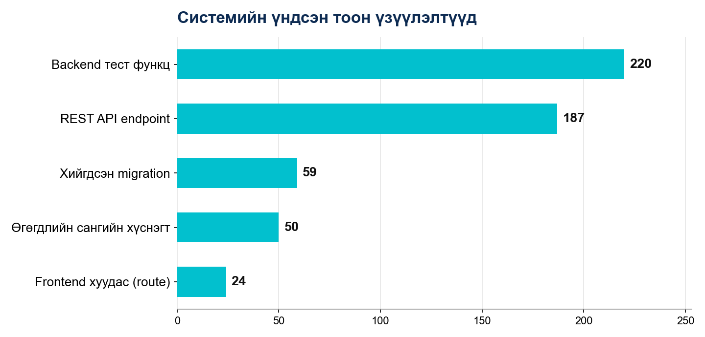
Зураг. Системийн үндсэн тоон үзүүлэлтүүд
| ҮР ДҮН | ДАВУУ ТАЛ | НЭМЭГДЭХ БОЛОМЖ |
|---|---|---|
| Газар чөлөөлөлтөөс нөхөх олговор хүртэлх бүх үе шат нэг системд цахимжсан; 4 бүрэлдэхүүн бүрэн холбогдсон | Frontend/backend тусдаа — багууд зэрэг хөгжүүлэх боломжтой; GIS анхнаасаа гол хэсэг | Мобайл апп; бусад төрийн системтэй (ХУР, ДАН) интеграци |
Идэвхтэй хөгжүүлэлт 2026.06.15–07.25-нд явагдаж, хоёр repo-д нийт 194 commit бүртгэгдсэн (frontend 127, backend 67). Мөн хугацаанд 56 migration-аар schema шат дараатай хөгжсөн. 07.13–07.25 хооронд нэмэгдсэн: бүтэцлэгдсэн лог/алдааны хяналт, гэрээ цахимаар хэвлэх урсгал, тайлангийн статистик + гүйцэтгэлийн засвар, 3D газрын зургийн дүрслэл.
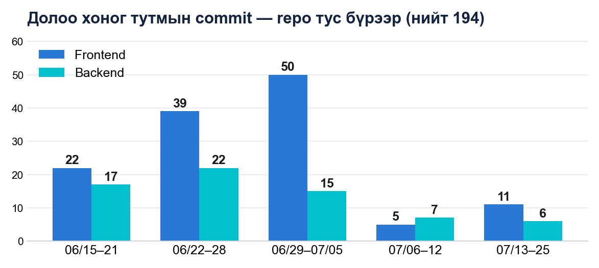
График. Долоо хоног тутмын commit — repo тус бүрээр
| ҮР ДҮН | ДАВУУ ТАЛ | НЭМЭГДЭХ БОЛОМЖ |
|---|---|---|
| 6 долоо хоногт бүрэн ажиллагаатай систем — 194 commit, 56 migration | Жижиг, ойр commit; front/back зэрэгцээ хөгжсөн | Release tag, changelog; PR-д автомат шалгалт |
Хөгжүүлэлтийн төлөвлөгөөний 50 ажлын гүйцэтгэлийн товч байдал. Дэлгэрэнгүйг 10-р бүлэгт үзнэ үү.
| Төлөв | Тоо | Хувь |
|---|---|---|
| Нийт төлөвлөгөөт ажил | 50 | 100% |
| Бүрэн хийгдсэн | 16 | 32% |
| ГУС интеграци хүлээгдэж буй — мок-оор бэлэн урсгалтай | 21 | 42% |
| ГУС-аас хамааралтай хүлээгдэж — холболт хийгдээгүй | 10 | 20% |
| Бусад хүлээгдэж байгаа | 3 | 6% |
Жинтэй нийт гүйцэтгэл: 32.8/50 ажил (66%) — мок-оор бэлэн 21 ажлыг 80%, ГУС-аас бүрэн хамааралтай 10 ажлыг 0% гэж тооцов.
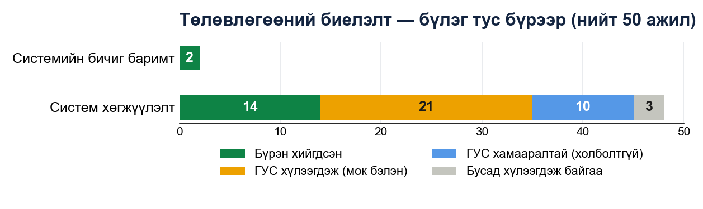
График. Төлөвлөгөөний биелэлт — бүлэг, төлөв тус бүрээр
Backend нь /api/v1 суурьтай 187 REST endpoint үзүүлдэг. Дэлгэрэнгүйг 5-р бүлэгт үзнэ үү.
| Бүлэг | Endpoint |
|---|---|
| Газар чөлөөлөлт (nested ресурсууд) | 61 |
| Мэргэжлийн байгууллагын портал (/prof) | 43 |
| Лавлах, тохиргоо (9 бүлэг) | 36 |
| Хэрэглэгч, роль, зөвшөөрөл | 16 |
| Бусад (dashboard, олговор, тайлан г.м.) | 12 |
| Нэвтрэлт, нэгж талбар, мэдэгдэл, аудит лог | 19 |
| Нийт | 187 |
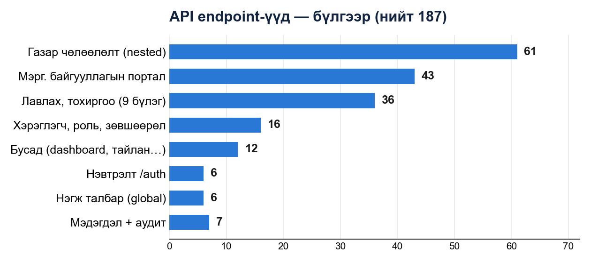
График. API endpoint-уудын бүлэглэл
Өгөгдлийн сангийн 50 хүснэгт 8 домэйнд хуваагдана. Дэлгэрэнгүйг 4.3-р бүлэгт үзнэ үү.
| Домэйн | Тоо |
|---|---|
| Нэгж талбар | 10 |
| Газар чөлөөлөлт | 9 |
| Үнэлгээ, байгууламж | 9 |
| Хэрэглэгч, эрх (Auth DB) | 7 |
| Төлөвлөгөө, лавлах | 6 |
| Нөхөх олговор | 4 |
| Мэдэгдэл, аудит лог | 3 |
| Баримт бичиг | 2 |
| Нийт | 50 |
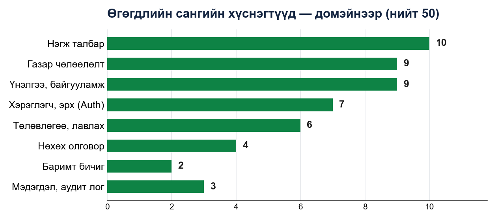
График. Өгөгдлийн сангийн хүснэгтүүдийн домэйн тус бүрийн тоо
Backend нь Clean Architecture зарчмаар давхаргажсан (handler → service → repository → PostgreSQL), frontend нь Next.js App Router бүтэцтэй. Бүх хамаарал dependency injection хэлбэрээр угсрагдана.
| Давхарга | Тайлбар |
|---|---|
| Вэб апп — Next.js 14 | 24 хуудас · GeoServer прокси · SSE Excel тайлан · DOCX загвар · React Query · OpenLayers |
| REST API — Go 1.25 / Gin | Handler (33) → Service (13) → Repository (10, raw SQL/pgx) · Middleware: JWT, RBAC, assignment, lock, rate-limit · Swagger |
| Main DB — PostgreSQL 16 + PostGIS 3.4 | Бизнес өгөгдөл: 42 хүснэгт · геометр (EPSG:4326) · ST_* орон зайн тооцоолол |
| Auth DB — PostgreSQL 16 | Хэрэглэгч, роль, зөвшөөрөл, token: 8 хүснэгт · тусдаа сан |
| GeoServer 2.25 — WMS/WFS | Захиргааны нэгж, төлөвлөгөө, талбарын статусын давхаргууд · CQL шүүлт |
Кодын хэмжээ: Backend (Go) — 30,529 мөр; Frontend (TS/TSX) — 28,978 мөр.
| ҮР ДҮН | ДАВУУ ТАЛ | НЭМЭГДЭХ БОЛОМЖ |
|---|---|---|
| 199 файлд давхаргажсан код; Docker-оор орчин нэг командаар босдог | Бизнес логик framework-оос хараат бус, mock-оор тестлэгддэг; Auth DB тусгаарлагдсан | Redis кэш; stateless тул горизонталь масштаблахад бэлэн |
| Хэсэг | Технологи | Үүрэг |
|---|---|---|
| Frontend | Next.js 14.2 · React 18 · TypeScript 5 | App Router, SSR/standalone build |
| Radix UI + Tailwind CSS 3.4 | Хүртээмжтэй UI, dark mode | |
| TanStack React Query 5 | Сервер өгөгдлийн кэш | |
| react-hook-form + zod | Маягт, схем валидаци | |
| OpenLayers 10.2 | Газрын зургийн дүрслэл | |
| exceljs · SheetJS · pdf-lib · recharts | Excel, PDF, график | |
| Backend | Go 1.25 · Gin 1.10 | HTTP framework, middleware |
| pgx/v5 + pgxpool | ORM-гүй raw SQL | |
| golang-jwt/v5 · bcrypt | Token, нууц үгийн хэшлэлт | |
| golang-migrate/v4 | Автомат migration | |
| swaggo/swag | Swagger баримтжуулалт | |
| Дэд бүтэц | PostgreSQL 16 + PostGIS 3.4 | Реляц + орон зайн сан (2 instance) |
| GeoServer 2.25 · Docker · systemd | WMS/WFS, контейнержуулалт |
| ҮР ДҮН | ДАВУУ ТАЛ | НЭМЭГДЭХ БОЛОМЖ |
|---|---|---|
| Бүх давхаргад орчин үеийн нээлттэй эхийн технологи — лицензийн зардалгүй | Go + raw SQL — өндөр гүйцэтгэл; TypeScript — төрлийн аюулгүй байдал | OpenTelemetry мониторинг; sqlc — SQL-ийн compile-time шалгалт |
Өгөгдөл хоёр тусдаа санд хуваагдана: бизнес өгөгдлийн main DB (42 хүснэгт, PostGIS өргөтгөлтэй) ба хэрэглэгч/эрхийн auth DB (8 хүснэгт). Хоёр санг тусгаарласнаар хэрэглэгчийн нууц мэдээлэл бизнес өгөгдлөөс салангид хамгаалагдаж, тус тусдаа нөөцлөх/сэргээх боломжтой. Schema-ийн өөрчлөлт бүр 59 хувилбартай migration-аар (up/down хостой, нийт 118 файл) бүртгэгдэж, сервер асахад автоматаар хэрэгжинэ.
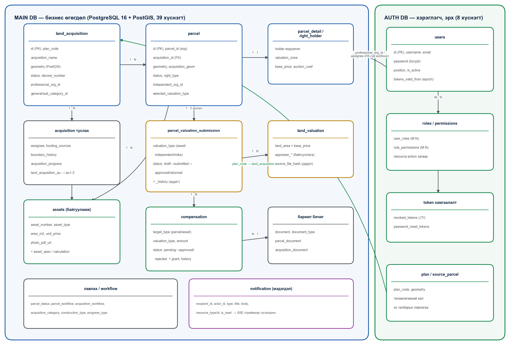
Зураг 1. Өгөгдлийн сангийн хялбаршуулсан ERD — хоёр сан, гол хүснэгтүүд ба харилцаанууд
Домэйн бүрийн төв хүснэгтүүд, тэдгээрийн гол баганууд (DB-ээс шууд гаргав):
| Хүснэгт | Гол баганууд | Үүрэг |
|---|---|---|
| land_acquisition | id, plan_code/plan_geom, acquisition_name, geometry, area_m2, status, decree_number/date, professional_org_id, general/sub_category_id, implementing/responsible_org | Системийн төв объект — газар чөлөөлөлт. Төлөвлөгөөний хилээс эхэлж, статусын workflow-оор «Баталгаажсан» хүртэл явна |
| parcel | id, parcel_id (кадастрын код), acquisition_id, geometry, acquisition_geom, acquisition_area_m2, remaining_area_m2, status, right_type, landuse, independent_org_id, selected_valuation_type, compensation_paid | Чөлөөлөлтөд өртсөн нэгж талбар. Давхцлын геометр/талбай PostGIS-ээр автоматаар тооцогдоно |
| parcel_detail / right_holder | holder холбоос, valuation_zone, base_price, auction_coefficient/price | Эзэмшигчийн болон газрын үнэлгээний суурь мэдээлэл |
| parcel_valuation_submission | acquisition_id, parcel_id, valuation_type (asset/independent/mika), status, submitted_by/at, reviewed_by/at, last_note | Гурван зэрэгцээ үнэлгээний урсгалын илгээх→батлах төлөв; _history хүснэгтэд бүх шилжилт архивлагдана. Батлахад бусад урсгал автоматаар «Татгалзсан» болно |
| land_valuation | land_area_m2, base_price_per_m2, appraiser_org_name/reg_no/license/director, source_file_name, source_file_hash | Газрын үнэлгээ + Excel-ээс импортолсон үнэлгээчийн мэдээлэл; source_file_hash (SHA-256) давхардсан файлыг дахин оруулахаас сэргийлнэ |
| assets | asset_number, asset_type (real_state/property), asset_name, floor_count, area_m2, owner_name, unit_price, photo_pdf_url, valuation_type | Талбар дээрх барилга байгууламж, эд хөрөнгө; asset_spec/asset_calculation-аар тохируулгат үзүүлэлт, тооцоолол хадгална |
| compensation | target_type (parcel/asset), valuation_type, compensation_type, coverage_percent, amount, status (pending/approved/rejected), review_note, reviewed_by, valuation_report_url | Нөхөх олговор; санхүүгийн батлах workflow-той, compensation_grant (газраар олгох) ба compensation_history (архив) дагалдана |
| notification | recipient_id, actor_id, type, title, body, resource_type/id, acquisition_id, parcel_id, is_read, read_at | Хэрэглэгчийн мэдэгдэл; SSE стриймээр бодит цагт түгээгдэнэ |
| users (Auth DB) | username, email, password (bcrypt), position, is_active, tokens_valid_from, deleted_at | Хэрэглэгчийн бүртгэл; tokens_valid_from нь нууц үг солиход бүх session-ийг хүчингүй болгох epoch; зөөлөн устгалттай (deleted_at) |
| Домэйн | Тоо | Хүснэгтүүд |
|---|---|---|
| Нэгж талбар | 10 | parcel, parcel_detail, parcel_document, parcel_payment, parcel_status, parcel_status_history, parcel_workflow, source_parcel, right_holder, authorized_representatives |
| Газар чөлөөлөлт | 9 | land_acquisition, land_acquisition_assignee, land_acquisition_au, land_acquisition_boundary_history, land_acquisition_document, acquisition_category, acquisition_document, acquisition_progress, acquisition_workflow |
| Үнэлгээ, байгууламж | 9 | assets, asset_detail, asset_spec, asset_spec_type, asset_calc_type, asset_calculation, land_valuation, parcel_valuation_submission, parcel_valuation_submission_history |
| Хэрэглэгч, эрх (Auth DB) | 7 | users, roles, permissions, role_permissions, user_roles, password_reset_tokens, revoked_tokens |
| Төлөвлөгөө, лавлах | 6 | plan, au1, au2, au3, construction_type, progress_type |
| Нөхөх олговор | 4 | compensation, compensation_grant, compensation_history, funding_sources |
| Баримт бичиг | 2 | document, document_type |
| Мэдэгдэл, аудит лог | 3 | notification, audit_log, client_request |
График. Өгөгдлийн сангийн хүснэгтүүдийн домэйн тус бүрийн тоо
| ҮР ДҮН | ДАВУУ ТАЛ | НЭМЭГДЭХ БОЛОМЖ |
|---|---|---|
| 50 хүснэгтэд домэйн бүрэн загварчлагдаж, 59 migration-аар хувилбаржсан | Migration бүр буцаах хостой; түүхийн хүснэгтүүд — аудит бэлэн; хоёр сан тусгаарлагдсан | PITR нөөцлөлт, read replica; том хүснэгтийг partition хийх |
Backend нь /api/v1 суурьтай 187 REST endpoint (програмуудын хооронд мэдээлэл солилцох үйлчилгээний цэг) үзүүлдэг, бүгд Swagger-ээр баримтжсан.
| Бүлэг | Endpoint |
|---|---|
| Газар чөлөөлөлт (nested ресурсууд) | 61 |
| Мэргэжлийн байгууллагын портал (/prof) | 43 |
| Лавлах, тохиргоо (9 бүлэг) | 36 |
| Хэрэглэгч, роль, зөвшөөрөл | 16 |
| Бусад (dashboard, олговор, тайлан, тайлангийн нэгтгэсэн статистик…) | 12 |
| Нэвтрэлт /auth (rate limit 30/мин) | 6 |
| Нэгж талбар (global) | 6 |
| Мэдэгдэл /notifications | 5 |
| Аудит лог + гадаад системрүү илгээсэн хүсэлтийн бүртгэл (/audit-logs, /client-requests) | 2 |
График. API endpoint-уудын бүлэглэл
httpclient багц нэмэгдсэн; үүгээр дамжсан дуудлага бүр (method, host, замын зам, хүсэлт/хариу, төлөв, хугацаа) client_request хүснэгтэд автоматаар бүртгэгдэж, admin-only GET /client-requests-ээр харагдана. Одоогоор идэвхтэй дуудлага хийгдэхгүй байгаа ч ГУС-ийн API нээгдэхэд шинэ интеграцийн код заавал үүгээр дамжихаар бэлдэгдсэн.| ҮР ДҮН | ДАВУУ ТАЛ | НЭМЭГДЭХ БОЛОМЖ |
|---|---|---|
| Гадны байгууллагын хандалт тусдаа порталаар тусгаарлагдсан | Хувилбартай зам (/api/v1) — v2 гаргахад эвдрэлгүй | Webhook API; batch endpoint-ууд |
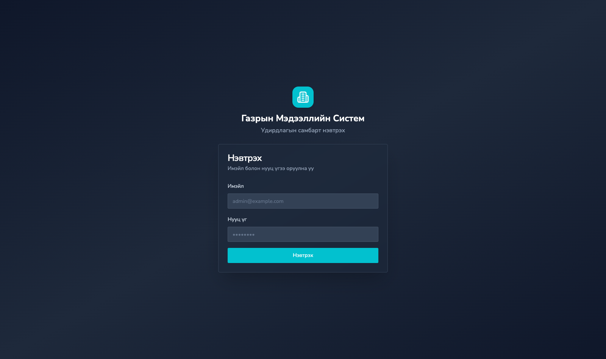
Зураг 8. Системд нэвтрэх дэлгэц
| Роль | Хамрах хүрээ |
|---|---|
| admin | Бүх зөвшөөрөл, тохиргооны модулиуд |
| senior_specialist — Ахлах мэргэжилтэн | Чөлөөлөлт үүсгэх/засах, батлах үйлдлүүд, хэрэглэгч харах |
| employee — Мэргэжилтэн | Өөрт хуваарилагдсан чөлөөлөлт дээр ажиллах |
| professional_org — Мэргэжлийн байгууллага | Зөвхөн /prof портал; өөрт оноогдсон объектууд |
| mika — МИКА | Хөндлөнгийн хяналтын үнэлгээний урсгал |
| finance_specialist — Санхүү | Нөхөх олговрын хяналт, баталгаажуулалт |
Зөвшөөрөл resource:action хэлбэртэй, JWT дотор шингэсэн тул шалгалт DB хандалтгүй. Middleware 4 түвшний хамгаалалт давхарлана: permission/role шалгалт, хуваарилалтын шалгалт, түгжээний шалгалт, байгууллагын гишүүнчлэл.
✓ бүрэн · ◐ нөхцөлтэй/хязгаартай · — харагдахгүй
| Цэс / Үйлдэл | Админ | Ахлах | Мэргэжилтэн | Мэрг.байг. | МИКА | Санхүү |
|---|---|---|---|---|---|---|
| Хяналтын самбар | ✓ | ✓ | ✓ | ◐¹ | ◐¹ | ◐¹ |
| Газар чөлөөлөлт | ✓ | ✓ | ✓ | ◐² | ◐³ | ◐³ |
| Тайлан | ✓ | ✓ | ✓ | — | — | — |
| Газрын зураг | ✓ | ✓ | ✓ | — | — | — |
| Нэгж талбарын түүх | ✓ | ✓ | ✓ | — | — | — |
| Нөхөх олговорын түүх | ✓ | ✓ | ✓ | — | — | — |
| Удирдлага → Хэрэглэгчид | ✓ | ◐⁴ | — | — | — | — |
| Удирдлага → Эрх & Роль | ✓ | — | — | — | — | — |
| Тохиргоо (8 дэд цэс) | ✓⁵ | — | — | — | — | — |
¹ Самбарын цар хүрээ ролиор хязгаарлагдана ² Зөвхөн өөрт оноогдсон (/my_acquisitions) ³ Дэлгэрэнгүйд зөвхөн «Ерөнхий», «Нэгж талбар» таб ⁴ users:read — зөвхөн харах ⁵ admin:read эрхтэйд харагдана
| Цэс / Үйлдэл | Админ | Ахлах | Мэргэжилтэн | Мэрг.байг. | МИКА | Санхүү |
|---|---|---|---|---|---|---|
| — Газар чөлөөлөлт — | ||||||
| Жагсаалт, дэлгэрэнгүй харах | ✓ | ✓ | ◐ᵃ | ◐ᵇ | ✓ | ✓ |
| Үүсгэх, засах | ✓ | ✓ | — | — | — | — |
| Устгах | ✓ | — | — | — | — | — |
| Статусын workflow шилжүүлэх | ✓ | ✓ | — | — | — | — |
| — Нэгж талбар — | ||||||
| Талбарын мэдээлэл харах | ✓ | ✓ | ◐ᵃ | ◐ᶜ | ◐ᶜ | ◐ᶜ |
| Засах, баримт, төлбөр бүртгэх | ✓ | ✓ | — | — | — | — |
| — Үнэлгээ (3 урсгал) — | ||||||
| Үнэлгээний мэдээлэл харах | ✓ | ✓ | ✓ | ◐ᵈ | ✓ | ✓ |
| Хөрөнгийн үнэлгээ оруулах | — | — | — | ◐ᵉ | — | — |
| Хөндлөнгийн үнэлгээ оруулах | — | — | — | ◐ᶠ | — | — |
| МИКА үнэлгээ оруулах | — | — | — | — | ✓ | — |
| Excel-ээс үнэлгээ импортлох | ✓ | ✓ | — | ◐ᵉ | ✓ | — |
| Үнэлгээ илгээх (submit) | — | ✓ | — | ◐ᵉ | ◐ᵍ | — |
| Үнэлгээ батлах / буцаах | — | — | — | — | — | ✓ |
| — Нөхөх олговор — | ||||||
| Олговрын мэдээлэл харах | ✓ | ✓ | ◐ᵃ | ◐ᵇ | ✓ | ✓ |
| Олговор бүртгэх, засах | ✓ | ✓ | — | ◐ᵉ | ✓ | — |
| Олговор батлах / татгалзах | — | — | — | — | — | ✓ʰ |
| — Удирдлага, тайлан — | ||||||
| Хэрэглэгч удирдах (CRUD) | ✓ | ◐ⁱ | — | — | — | — |
| Роль, зөвшөөрөл, тохиргоо | ✓ | — | — | — | — | — |
| Excel тайлан татах | ✓ | ✓ | ✓ | — | — | — |
ᵃ Өөрт хуваарилагдсан чөлөөлөлт ᵇ Өөрийн байгууллагад оноогдсон объект (/prof) ᶜ «Үнэлгээ хийх» статустай үед, хязгаартай табууд ᵈ Зөвхөн өөрийн урсгал ᵉ Үндсэн гүйцэтгэгчээр оноогдсон үед ᶠ Хөндлөнгийн байгууллагаар оноогдсон талбарт ᵍ МИКА өөрийн урсгалдаа ʰ Зөвхөн санхүүгийн роль — админ ч эрхгүй ⁱ users:read — зөвхөн харах
| ҮР ДҮН | ДАВУУ ТАЛ | НЭМЭГДЭХ БОЛОМЖ |
|---|---|---|
| 6 роль, 4 давхар middleware хамгаалалт; гадны байгууллага дотоод өгөгдөлд хандахгүй | Token-д шингэсэн эрх — хурдан шалгалт; объект түвшний нарийн хяналт | 2FA, ДАН нэвтрэлт; аудит логийн админ UI |
| Давхарга | Хэрэгжилт | Үүрэг |
|---|---|---|
| Хадгалалт | PostGIS 3.4 | geometry(Polygon,4326) багана, орон зайн индекс |
| Тооцоолол | SQL доторх ST_* функцууд | Огтлолцол, давхцлын талбай, геометрийн засвар |
| Нийтлэлт | GeoServer 2.25 | WMS/WFS — статусын давхаргууд (s0–s5) |
| Дүрслэл | OpenLayers 10.2 | Интерактив зураг, давхаргын самбар, CQL шүүлт |
| Импорт | Go shapefile уншигч | ESRI Shapefile → WKT (гадны сангүй) |
| Прокси | Next.js route | GeoServer-ийг гадагш ил гаргалгүй дамжуулна |
| ҮР ДҮН | ДАВУУ ТАЛ | НЭМЭГДЭХ БОЛОМЖ |
|---|---|---|
| Талбарын давхцал, чөлөөлөх талбай автоматаар тодорхойлогддог | Тооцоолол DB түвшинд — үнэн зөвийн нэг эх сурвалж | Vector tile (MVT); кадастрын системтэй синхрончлол |
| Үзүүлэлт | Утга |
|---|---|
| Backend тест функц | 220 |
| Backend тест файл | 23 |
| Mock багц (handler / service / repo) | 3 |
| Frontend тест сьют (policy, parser) | 2 |
| ҮР ДҮН | ДАВУУ ТАЛ | НЭМЭГДЭХ БОЛОМЖ |
|---|---|---|
| Гол бизнес логик автомат шалгалттай | Эрхийн хяналт тусгай тестээр баталгаажсан | E2E тест (Playwright); CI/CD pipeline; ачааллын тест |
Энэ бүлэгт системийн цэс бүрийн дэлгэц дээр харагдах мэдээлэл, хэрэглэгчийн гүйцэтгэх боломжтой бүх үйлдлийг эх кодоос шууд гаргаж дэлгэрэнгүй тайлбарлав. Хуудасны бүтэц: үндсэн үйл ажиллагааны 11, тохиргоо/лавлахын 8, хэрэглэгч-эрхийн 3, системийн 2 хуудас.
Дотоод хэрэглэгчийн самбар — системийн нэгдсэн статистикийг шүүлттэйгээр харуулна. Гадаад ролиудад (санхүү, МИКА, үнэлгээний байгууллага) тусгай хувилбар харагдана.
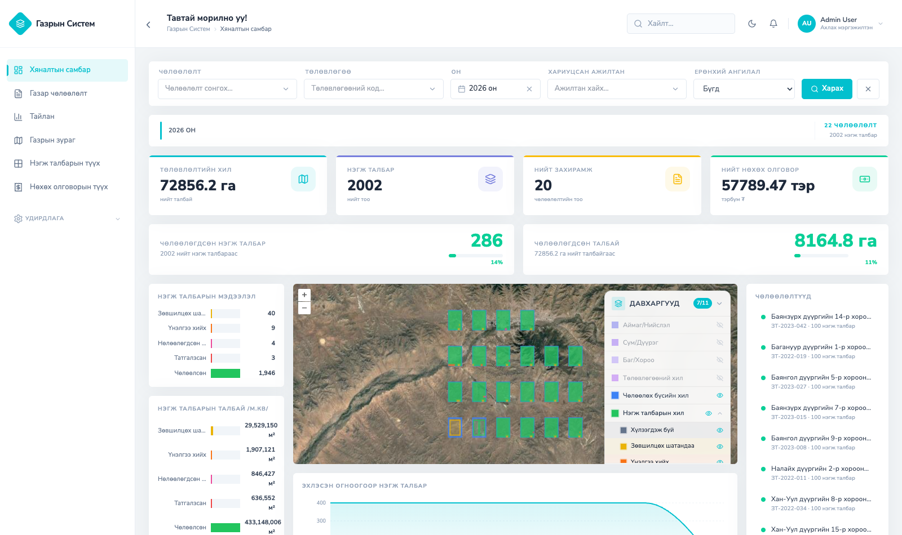
Зураг 2. Хяналтын самбар — шүүлтүүр, KPI картууд, статусын задаргаа, газрын зураг, чөлөөлөлтүүдийн жагсаалт
«Нэмэх» — шинэ чөлөөлөлт бүртгэх 2 алхамт цонх (зөвхөн ахлах мэргэжилтэн, land:create):
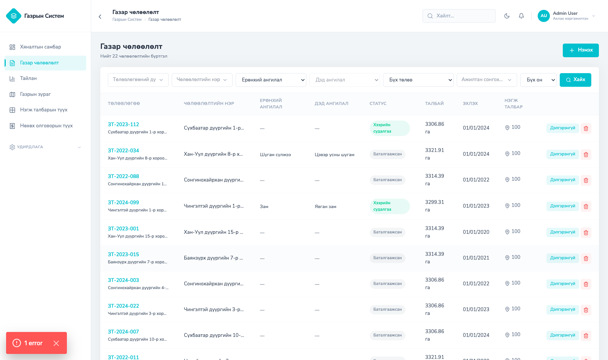
Зураг 3. Газар чөлөөлөлтийн жагсаалт — шүүлтүүр, статусын тэмдэглэгээ, мөрийн үйлдлүүд
Толгой хэсэгт нэр, статус, төлөвлөгөөний код, «Тайлан татах» (тухайн чөлөөлөлтийн Excel тайлан) товч байрлана. Баталгаажсан чөлөөлөлт бүх засварыг түгжинэ.
| Таб | Агуулга ба үйлдлүүд |
|---|---|
| Ерөнхий мэдээлэл | Үндсэн ба төслийн мэдээлэл; «Засах» горимд: хил солих файл, талбайг «Хилээс тооцоолох», Мэргэжлийн байгууллага сонгох, НЗД захирамжийн дугаар/огноо, чөлөөлөх шалтгаан |
| Хавсралт | Баримт бичгийн жагсаалт (PDF, ≤50MB); «Нэмэх» — файлын төрөл сонгож байршуулах; татах, «Устгах» |
| Нэгж талбарууд | Талбаруудын хүснэгт: дугаар, баг, эрхийн төрөл, зориулалт, талбай, давхцал, нөхөн төлбөрийн хэлбэр, төлөв; дугаар/захиргааны нэгж/эрхийн төрөл/төлөвөөр шүүх; «Дэлгэрэнгүй» линк. Санхүү зөвхөн илгээгдсэн үнэлгээтэй талбаруудыг харна |
| Санхүүжилт | Эх үүсвэрүүдийн хүснэгт (байгууллага, төрөл, дүн MNT/USD/EUR/CNY, тайлбар, нийт дүн); «Нэмэх», «Засах», «Устгах» — зөвхөн ахлах мэргэжилтэн |
| Явц | Одоогийн төлөв + «Явц солих» цонх: шилжүүлэх төлөв сонгох, «Баталгаажсан» руу шилжихэд НЗД-ын захирамжийн дугаар*, огноо* заавал; бүх талбар эцсийн төлөвт байхыг шаардана. Явцын түүхийн хүснэгт |
| Ажилтнууд | Хуваарилагдсан ажилтнуудын жагсаалт; «Ажилтан нэмэх» 2 алхамт цонх (нэр/албан тушаалаар хайж олноор сонгох → баталгаажуулах); хасах үйлдэл — зөвхөн ахлах мэргэжилтэн. Шинээр нэмэгдсэн ажилтанд мэдэгдэл очно |
| Байршил | Чөлөөлөлтийн хил, захиргааны нэгжийн зурган дүрслэл (OpenLayers) |
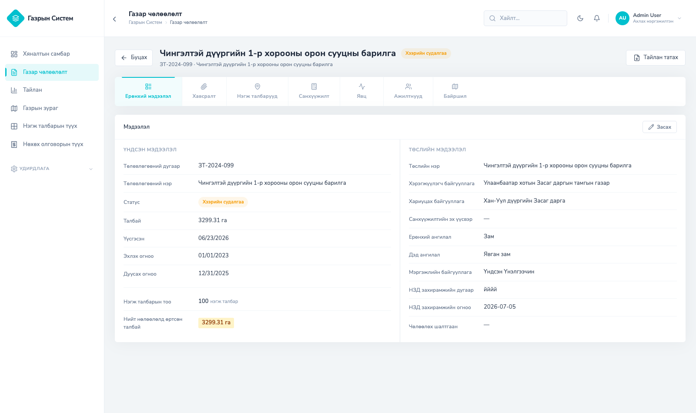
Зураг 4. Чөлөөлөлтийн дэлгэрэнгүй — табууд, үндсэн ба төслийн мэдээлэл
Талбар «Чөлөөлсөн», «Татгалзсан», «Нөлөөллөөс гарсан» төлөвт орсон эсвэл чөлөөлөлт баталгаажсан үед засвар түгжигдэнэ. Мэргэжлийн байгууллага бүх үйлдлээ /prof порталаар хийнэ.
| Таб | Агуулга ба үйлдлүүд |
|---|---|
| Ерөнхий мэдээлэл | Талбарын мэдээлэл (дугаар, захиргааны нэгж, эрхийн төрөл, зориулалт, нийт/чөлөөлөгдөх талбай, үлдэх хэмжээ); «Засах» горимд чөлөөлөгдөх талбай, хилийн WKT/GeoJSON, МС-д өөрчлөлт орсон тэмдэглэгээ; «Хилээс тооцоолох»; «Мэдээлэл дуудах» — кадастр, төлбөр-үнэлгээ, мониторингийн мэдээллийг алхамчилсан синхрончлолоор татна; байршлын зураг |
| Эзэмшигч | Эзэмшигчийн мэдээлэл (нэр, регистр, утас, и-мэйл); өргөдөл, шийдвэр, гэрээ, гэрчилгээний дугаарууд; газрын үнэлгээ (бүс, суурь үнэ, дуудлагын итгэлцүүр); «Итгэмжлэгдсэн төлөөлөгч» бүртгэх/устгах |
| Нөхөх олговор | Гурван үнэлгээний дэд таб (доор дэлгэрэнгүй) |
| Баримт бичиг | Талбарын хавсралтууд (PDF ≤50MB); төрөл сонгож «Нэмэх», татах, «Устгах» |
| Эх хэвлэл | 11 хэвлэх загвар (доор жагсаав) — «Татах» товчоор мэдээлэл автоматаар бөглөгдөж үүснэ |
| Явц | Одоогийн статус + «Явц нэмэх»: статус сонгох → баталгаажуулах; «Чөлөөлсөн» болгохын өмнө сонгосон урсгалын олговор зөвшөөрөгдсөн, үнэлгээний тайлан хавсаргагдсан байхыг шаардана; явцын түүхийн цагийн хэлхээ |
«Үндсэн үнэлгээ» (мэргэжлийн байгууллага), «Хөндлөнгийн үнэлгээ» (хөндлөнгийн байгууллага), «МИКА» гэсэн 3 зэрэгцээ урсгал. Санхүүгийн баталсан урсгал «Үндсэн үнэлгээ» болж, бусад нь «Идэвхгүй» тэмдэглэгддэг.
| № | Загвар | Формат |
|---|---|---|
| 1 | Урьдчилан мэдэгдэх хуудас | DOCX |
| 2 | Санал асуулгын хуудас | DOCX |
| 3 | Нийгэм эдийн засгийн судалгаа | DOCX |
| 4 | Шалгах хуудас | DOCX |
| 5 | Хурлын тэмдэглэл | DOCX |
| 6 | Уулзалтын тэмдэглэл | DOCX |
| 7 | Захирамжийн төсөл | XLSX (мэдээлэл автоматаар бөглөгдөнө) |
| 8 | Чөлөөлсөн газрыг хүлээлцсэн акт | DOCX |
| 9 | Чөлөөлсөн газрыг хүлээлцсэн акт 2 | DOCX |
| 10 | Хяналтын карт | DOCX |
| 11 | Төлбөрийн гүйцэтгэл | XLSX |
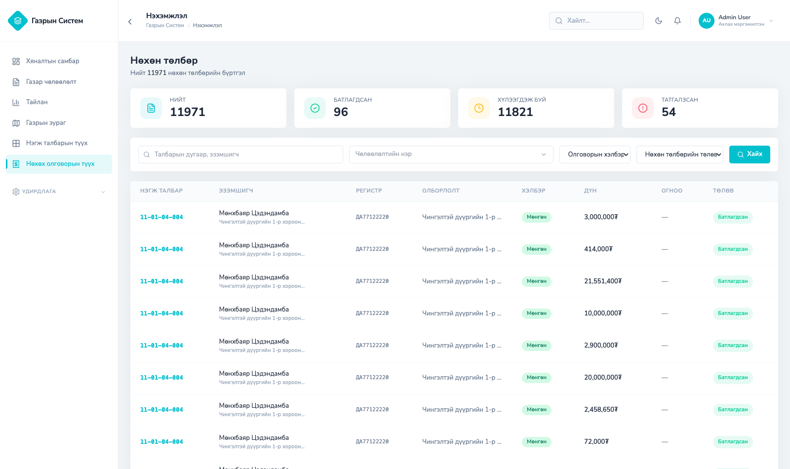
Зураг 5. Нөхөх олговорын нэгдсэн жагсаалт — статистик картууд, шүүлтүүр, төлөвийн тэмдэглэгээ
Гүйцэтгэлийн засвар: Статистикийн картуудыг өмнө нь хуудаслагдсан жагсаалтын бүх хуудсыг дараалан татаж клиент талд нэгтгэдэг байсан нь том жагсаалтад /report/download-ыг 10 гаруй удаа давхар дуудуулж байв. Үүнийг сервер талд нэг л дуудлагаар нэгтгэн тооцдог шинэ GET /report/summary endpoint болгож зассан.
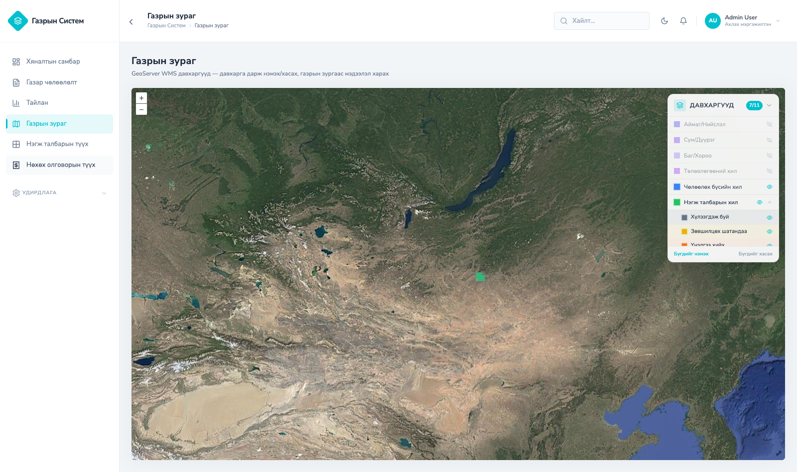
Зураг 6. Газрын зураг — GeoServer давхаргууд, нэгж талбарын статусын өнгөт дүрслэл
Эдгээр 8 дэлгэц нь системийн «тохируулгын самбар» юм: байгууллагын ажлын дүрэм, ангилал, статусууд өөрчлөгдөхөд программист дуудахгүйгээр админ өөрөө эндээс өөрчилдөг. Бүх модуль «Нэмэх» / «Засах» / «Устгах» (баталгаажуулах асуулттай) нэгдсэн загвартай.
| Модуль | Юу тохируулах, системд хэрхэн нөлөөлөх |
|---|---|
| Чөлөөлөлтийн ангилал | Ерөнхий ангилал ба түүний доторх дэд ангиллын мод (нэр, эрэмбэ). Шинэ чөлөөлөлт бүртгэхэд заавал сонгогдоно; хяналтын самбар болон тайлангийн шүүлтүүрт ашиглагдана. Жишээ: «Авто зам» ерөнхий ангилал дотор «Гүүр» дэд ангилал нэмж болно |
| Чөлөөлөлтийн явцын статус | Чөлөөлөлтийн түвшний статусууд (нэр, тайлбар). Чөлөөлөлтийн «Явц» таб дээр харагдах төлөвүүдийг тодорхойлно |
| Нэгж талбарын статус | Талбарын амьдралын мөчлөгийн статусууд (код, нэр, эрэмбэ) — Хүлээгдэж буй, Зөвшилцөх шатандаа, Үнэлгээ хийх, Чөлөөлсөн г.м. Газрын зурган дээрх өнгөт давхаргууд (s0–s5) эдгээртэй уягдана. «Үнэлгээ хийх» статуст орсон талбар үнэлгээний байгууллагуудад автоматаар мэдэгдэл илгээнэ |
| Баримт бичгийн төрөл | Хавсралтын төрлүүд (код, нэр, хамрах хүрээ: чөлөөлөлт/талбар). Файл хавсаргах цонхны «Файлын төрөл» сонголтыг бүрдүүлнэ. Онцгой: valuation_report (Хөрөнгийн үнэлгээний тайлан) төрөлт баримт нь талбарыг «Чөлөөлсөн» болгох урьдчилсан нөхцөл |
| Нэгж талбарын ажлын урсгал | Талбарын аль статусаас аль статус руу шилжиж болохын дүрэм (эхлэх статус → очих статус, эрэмбэ). Талбарын «Явц нэмэх» цонхонд зөвхөн энд зөвшөөрөгдсөн шилжилтүүд санал болгогдоно — буруу дарааллаар алхам алгасахаас сэргийлнэ |
| Чөлөөлөлтийн ажлын урсгал | Чөлөөлөлтийн статусын шилжилтийн дүрэм (Шинэ → Хээрийн судалгаа → Баталгаажсан г.м.). Тохируулаагүй шилжилтийг систем зөвшөөрөхгүй |
| Байгууламжийн чанарын төрөл | Барилга байгууламжийн чанарын үзүүлэлтийн төрлүүд (код, нэр, эрэмбэ) — жишээ нь барилгын хийц, зориулалт. «Хөрөнгө нэмэх» цонхонд нэмэлт талбар болж харагдана; Excel импортын багана эдгээртэй тулгагдана |
| Байгууламжийн тооцооллын төрөл | Үнэлгээний тооцооллын үзүүлэлтүүд (код, нэр, хэмжих нэгж — жишээ нь «төгрөг/м²»). Хөрөнгийн үнэлгээний тооцоололд ашиглагдаж, нэгж үнэ × хэмжээ хэлбэрийн мөрүүдийг бүрдүүлнэ |
Мэдээллийн төлөв өөрчлөгдөх бүрд тухайн мэдээлэлтэй холбоотой бүх хэрэглэгчид мэдэгдэл үүсч, Server-Sent Events (SSE) стриймээр хөтөч рүү шууд түгээгдэнэ. Мэдэгдэл дээр дарахад холбогдох мэдээллийн дэлгэрэнгүй хуудас руу шилжинэ.
| Endpoint | Үүрэг |
|---|---|
| GET /notifications | Өөрийн мэдэгдлийн жагсаалт (хуудаслалт, unread шүүлт) |
| GET /notifications/unread-count | Уншаагүй мэдэгдлийн тоо |
| GET /notifications/stream | SSE бодит цагийн стрийм (25с heartbeat-тэй) |
| POST /notifications/{id}/read | Нэг мэдэгдлийг уншсан болгох |
| POST /notifications/read-all | Бүгдийг уншсан болгох |
Мэдэгдэл илгээгдэх үйл явдлууд ба хүлээн авагчид:
| Үйл явдал | Хүлээн авагчид |
|---|---|
| Чөлөөлөлтийн статус шилжилт | Хуваарилагдсан ажилтнууд + мэргэжлийн байгууллага |
| Талбарын статус шилжилт | Хуваарилагдсан ажилтнууд |
| Талбар «Үнэлгээ хийх» төлөвт орох | Мэргэжлийн байгууллага + сонгогдсон хөндлөнгийн байгууллага (тусгай «Үнэлгээ хийх талбар ирлээ» мэдэгдэл) |
| Үнэлгээ илгээх (submit) | Санхүүгийн мэргэжилтнүүд + ажилтнууд |
| Үнэлгээ батлах / буцаах | Илгээсэн этгээд + байгууллагууд + ажилтнууд |
| Олговор бүртгэх | Санхүүгийн мэргэжилтнүүд + ажилтнууд |
| Олговор батлах / татгалзах | Бүртгэсэн этгээд + ажилтнууд + мэрг. байгууллага |
| Ажилтан хуваарилах | Зөвхөн шинээр нэмэгдсэн ажилтнууд |
| Байгууллага оноох | Тухайн байгууллага |
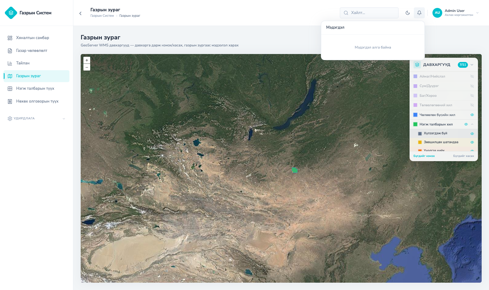
Зураг. Мэдэгдлийн хонхны цэс — жагсаалт, уншсан/уншаагүй төлөв
Хэн, хэзээ, ямар төхөөрөмж/хаягаас, ямар объект дээр, ямар өөрчлөлт хийснийг бүртгэх audit_log хүснэгт (migration 000052–000053, шүүлтийн индексүүдтэй) нэмэгдсэн.
| Багана | Агуулга |
|---|---|
| actor_id, actor_name, actor_position, actor_roles | Үйлдэл хийсэн хэрэглэгч — JWT-ээс автоматаар |
| action | Үйлдлийн төрөл: created / updated / deleted / status_changed / valuation_submit / valuation_approve / valuation_return / imported / upserted г.м. |
| resource_type, resource_id | 8 төрлийн объект: acquisition, parcel, valuation, compensation, document, payment, funding_source, authorized_representative |
| acquisition_id, parcel_id | Холбогдох чөлөөлөлт/талбар — хайлтад ашиглагдана |
| details (JSONB) | Үйлдлийн дэлгэрэнгүй — өөрчилсөн утгууд, тоо хэмжээ (жишээ нь импортын үед үүссэн/устсан мөрийн тоо) |
| ip_address, user_agent | Хүсэлт ирсэн IP хаяг, хөтчийн мэдээлэл |
| created_at | Үйлдлийн огноо, цаг |
client_request хүснэгт, GET /client-requests endpoint нэмэгдсэн (5-р бүлэгт дэлгэрэнгүй)| ҮР ДҮН | ДАВУУ ТАЛ | НЭМЭГДЭХ БОЛОМЖ |
|---|---|---|
| 13 багц модуль нэгдсэн урсгал бүрдүүлж, бүх чухал үйлдэл мэдэгдэл + аудитын давхар бүртгэлтэй | Үйлдэл бүр ролиор хязгаарлагдсан; мэдэгдэл бодит цагт; аудит IP/төхөөрөмжтэй мөрдөгдөнө | Аудит логийн админ дэлгэц; и-мэйл/E-Mongolia суваг; цахим гарын үсэг |
Энэ хэсэгт системийн цэсний бүтэц, роль тус бүрийн харагдац, гол ажиллах урсгалуудын (чөлөөлөлт, нэгж талбар, үнэлгээ) төлөвийн шилжилтийн дараалал болон код дотор бодитоор мөрдөгдөж буй шаардлагын (requirement) дүрмүүдийг нэгтгэв.
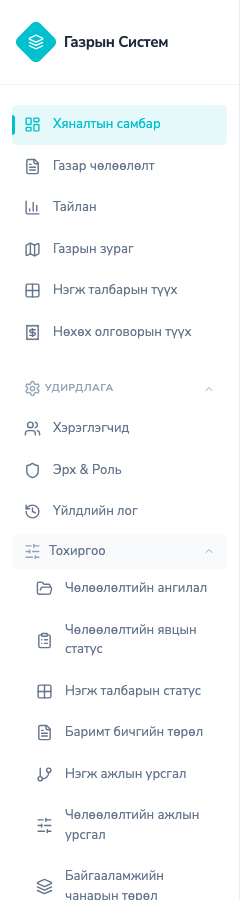
Зураг 13. Цэсний бүтэц — Удирдлага, Тохиргоо дэд цэснүүд дэлгэрсэн байдалтай
9.14.1 Цэсний бүтэц, роль тус бүрийн харагдац
| Цэс | Зам | Харагдах роль |
|---|---|---|
| Хяналтын самбар | / | Бүх 6 роль (гадаад 3 ролид хураангуй хувилбар) |
| Газар чөлөөлөлт | /acquisition | Админ, Ахлах, Мэргэжилтэн (бүрэн) · МИКА, Санхүү (зөвхөн энэ + самбар) |
| Тайлан | /report | Админ, Ахлах, Мэргэжилтэн |
| Газрын зураг | /map | Админ, Ахлах, Мэргэжилтэн |
| Нэгж талбарын түүх | /parcel | Админ, Ахлах, Мэргэжилтэн |
| Нөхөх олговорын түүх | /compensation | Админ, Ахлах, Мэргэжилтэн |
| Миний чөлөөлөлтүүд | /my_acquisitions | Зөвхөн Мэргэжлийн байгууллага (өөрийн тусдаа хураангуй цэс) |
| Удирдлага (дэд цэс) | ||
| — Хэрэглэгчид | /users | Дотоод роль (Админ, Ахлах, Мэргэжилтэн) — users:read г.м. зөвшөөрлөөр backend талд эцсийн шалгагдана |
| — Эрх & Роль | /roles | Мөн адил, дотоод роль |
| — Аудит лог | /audit_logs | audit:read зөвшөөрөлтэй (seed өгөгдлөөр одоогоор зөвхөн Админ) |
| Тохиргоо (дэд цэс, 8 модуль) | ||
| Ангилал, статус, урсгал, төрлийн 8 тохиргооны дэлгэц | /acquisition_category г.м. | admin:read зөвшөөрөлтэй (seed өгөгдлөөр одоогоор зөвхөн Админ) |
isExternal гэсэн нэг флагаар нэгтгэн авч үздэг ба тэдгээрийн цэс ердийн дотоод роль (Админ/Ахлах/Мэргэжилтэн)-той харьцуулахад эрс хураангуй байдаг: Мэргэжлийн байгууллага зөвхөн Самбар + «Миний чөлөөлөлтүүд» (тусдаа, зөвхөн харах жагсаалт), харин МИКА болон Санхүү Самбар + «Газар чөлөөлөлт» цэсийг л харна. Фронт талын харагдац нь зөвхөн таашаамж — бодит хандалтын хориг backend талын зөвшөөрөл/дугаарын шалгалтаар (доор 9.14.5) хийгддэг.9.14.2 Газар чөлөөлөлтийн ажиллах дараалал
Аль ч үе шатанд «Цуцлагдсан» (4) төлөвт шилжих боломжтой (тохиргооноос хамаарна).
acquisition_workflow хүснэгтэд шилжилтийн дүрэм нэмээгүй бол систем зөвхөн «дараагийн дугаар руу л» шилжихийг зөвшөөрдөг (буцах боломжгүй).9.14.3 Нэгж талбарын ажиллах дараалал
approved төлөвтэй байх; (2) үнэлгээний тайлан баримт бичиг хавсаргагдсан байх (эсвэл хуучин урсгалын хувьд олговрын бичлэгт тайлангийн URL бөглөгдсөн байх). Аль нэг нөхцөл хангагдаагүй бол «Үнэлгээний тайлан хавсаргаагүй байна» алдаа буцаж, төлөв шилжихгүй. Нэгж талбарын шилжилтийн дүрэм (аль төлөвөөс аль төлөв рүү зөвшөөрөгдөхийг) бүхэлдээ parcel_workflow тохиргооны хүснэгтээр удирддаг — хэрэв тохируулаагүй бол ямар ч шилжилт саналгүй.9.14.4 Үнэлгээ илгээх дэд урсгал
selected_valuation_type) урсгал болж бусад 2 урсгал «Идэвхгүй» болдог.9.14.5 Бусад объект түвшний хамгаалалт ба шаардлагын дүрэм
| Дүрэм | Тайлбар |
|---|---|
| Оноолт шалгах (assignment) | Ахлах мэргэжилтэн эсвэл тухайн чөлөөлөлтөд оноогдсон мэргэжилтэн л засах эрхтэй; Санхүү/МИКА зөвхөн уншиж болно (тусгайлан зөвшөөрөгдсөн бичих үйлдлээс бусад) |
| Түгжээ (Баталгаажсан) | «Баталгаажсан» чөлөөлөлтөд ямар ч бичих хүсэлт (POST/PUT/DELETE) 423 (Locked) алдаатай татгалзагдана; Мэргэжлийн байгууллагын /prof порталд бол GET хүсэлт ч түгждэг (илүү хатуу) |
| Байгууллагын гишүүнчлэл | Мэргэжлийн байгууллагын хэрэглэгч зөвхөн өөрт нь (эсвэл өөрийн хөндлөнгийн эрхээр) оноогдсон чөлөөлөлт/талбарт л /prof порталаар хандах боломжтой — өөр байгууллагын оноосон обьект руу орох боломжгүй |
| Файл хавсаргах | Баримт бичиг, зураг, shapefile тус бүр дээд тал нь 50MB; агуулгыг өргөтгөлөөр биш «эхний байт»-аар (magic bytes) шалгадаг — зөвхөн PDF зөвшөөрдөг, харин «Хурлын тэмдэглэл» баримтын төрөлд DOCX-ийг тусгайлан зөвшөөрдөг |
| Excel давхардлын хамгаалалт | Файлын SHA-256 хэш хөтөч дотор тооцогдож (файл өөрөө серверт хэзээ ч илгээгдэхгүй) бүртгэгдэнэ; хэрэв тухайн талбарт өмнө нь өгөгдөл орсон бол «Солих уу?» гэсэн баталгаажуулах цонх гарч, зөвшөөрвөл хуучин мэдээллийг устгаж шинээр орлуулна |
| Rate limit | Нэвтрэлтийн /auth зам минутад 30 хүсэлт (IP тус бүрээр); клиентийн лог зам минутад 120 хүсэлт |
Систем 2026.07-с эхлэн Frontend, Backend хоёулаа нэг нэгдсэн лог/хяналтын урсгалд холбогдсон. Доор энэ урсгал яг хэрхэн ажилладгийг эх сурвалжаас нь дэлгэрэнгүй тайлбарлав.
/api/client-log route-оор дамжиж, Next.js серверийн stdout руу JSON мөр болж бичигдэнэslog-оор JSON бүтэцтэй лог (method, зам, статус, хугацаа, IP) серверийн stdout руу шууд бичигдэнэjson-file драйверт (10MB × 3 файл rotation) хадгалагданаcontainer_name/service/project шошготойгоор Loki руу дамжуулнаgov_loki, gov_promtail, gov_grafana 3 контейнер ажиллаж байгаа эсэхийг шалгаж, байхгүй бол өөрөө docker compose up -d ажиллуулна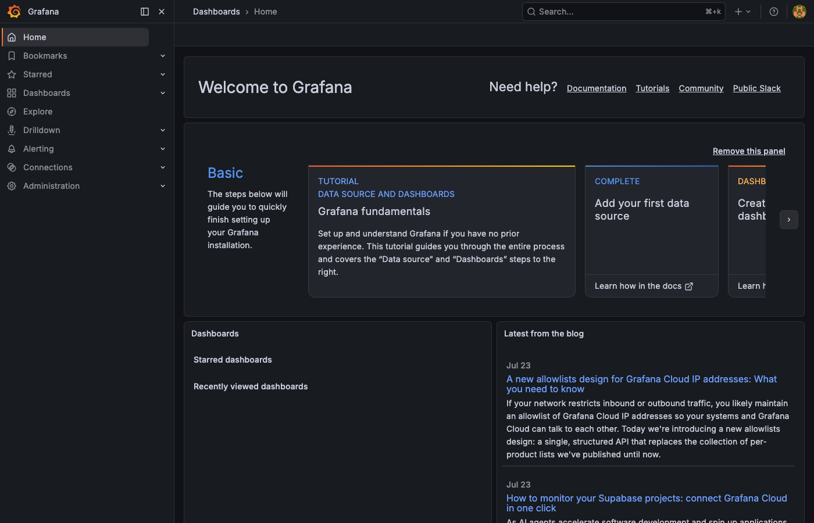
Зураг 14. Grafana — нэвтэрсэн байдал, хяналтын самбарын нүүр хуудас
Хөгжүүлэлтийн нарийвчилсан төлөвлөгөө (plan.xlsx, 2026.05–09)-ний бичиг баримт болон систем хөгжүүлэлтийн бүлгүүд нь задаргаа түвшний 50 ажлаас бүрдэнэ. Төлөв өнгөөр кодлогдсон: ногоон = бүрэн хийгдсэн; шар = хийгдсэн боловч Газрын удирдлагын системтэй (ГУС) холбогдох хөгжүүлэлт хүлээгдэж байгаа; будаагүй = хүлээгдэж байгаа.
Тооллогын арга: бүлэг, дэд бүлгийн гарчиг мөрүүдийг ажлын тоонд оруулаагүй, зөвхөн задаргаа ажлуудыг тоолсон. «Лог файл үүсгэх» (2.4.4.6) ажлыг аудит логийн системийн хэрэгжилтээр хийгдсэнд тооцов.
| Төлөв | Тоо | Хувь |
|---|---|---|
| Нийт төлөвлөгөөт ажил | 50 | 100% |
| Бүрэн хийгдсэн | 16 | 32% |
| ГУС интеграци хүлээгдэж буй — мок-оор бэлэн урсгалтай | 21 | 42% |
| ГУС-аас хамааралтай хүлээгдэж — холболт хийгдээгүй | 10 | 20% |
| Бусад хүлээгдэж байгаа | 3 | 6% |
График. Төлөвлөгөөний биелэлт — бүлэг, төлөв тус бүрээр
| Ангилал | Тоо | Гүйцэтгэлийн % | Жинтэй дүн |
|---|---|---|---|
| Бүрэн хийгдсэн | 16 | 100% | 16.0 |
| ГУС интеграци хүлээгдэж буй — мок-оор бэлэн урсгалтай | 21 | 80% | 16.8 |
| ГУС-аас хамааралтай хүлээгдэж — холболт хийгдээгүй | 10 | 0% | 0.0 |
| Бусад хүлээгдэж байгаа | 3 | 0% | 0.0 |
| Нийт | 50 | — | 32.8 |
Жинтэй гүйцэтгэлийн төлөвлөгөө: 32.8/50 ажил (66%). Мок-оор бэлэн 21 ажлыг гүйцэтгэлийн тооцоонд 80% гэж үзэв — техникийн урсгал бүрэн ажилладаг ч ГУС-ийн бодит өгөгдлөөр баталгаажаагүй тул 100% биш. Үлдсэн 10 ажилд ГУС-тай холбогдох ямар ч код (мок ч, бодит ч) одоогоор бичигдээгүй тул 0% гэж тооцов.
Эдгээр ажлын техникийн урсгал (бүртгэл, тохиргоо, тооцоолол) бодит ГУС холболтгүйгээр backend-д суулгасан (seeded) өгөгдөл эсвэл дотоод бүртгэлээр бүрэн ажиллаж байгааг баталгаажуулсан — ГУС нээгдэхэд зөвхөн өгөгдлийн эх сурвалжийг сольход хангалттай. Гүйцэтгэлийн тооцоонд 80% гэж үзэв (үлдэх 20% нь ГУС-ийн бодит холболтоор баталгаажина):
| Бүлэг | Тоо | Ажлууд (дугаар) |
|---|---|---|
| Системийн удирдлага, үндсэн бүртгэл | 7 | Хэрэглэгчийн бүртгэл (2.2.1), эрхийн бүртгэл (2.2.2), эрхийн тохиргоо (2.2.3), ажилтны бүртгэл (2.3.1), ажилтны лавлах (2.3.2), хуулийн этгээдийн бүртгэл (2.3.3), үнэлгээний байгууллагын бүртгэл (2.3.4) |
| Жилийн төлөвлөгөөний давхаргаас татах | 3 | Гэр хороолол (2.2.1.1), авто зам/шугам сүлжээ (2.2.1.2), нийгмийн дэд бүтэц (2.2.1.3) |
| ГУС-ийн бүрэлдэхүүн системүүдийн холболт | 5 | ГЗБ/хот төлөвлөлт (2.3.1), кадастр (2.3.2), үнэлгээ (2.3.3), хот байгуулалтын кадастр (2.3.4), мониторинг (2.3.5) |
| Кадастрын давхцал, зөрчлийн давхарга | 3 | Зөрчлийн давхарга үүсгэх (2.4.1.1), холбох (2.4.1.2), давхцал шалгах (2.9.1) |
| Эрх, захирамжийн урсгал | 2 | Чиг үүргээр эрх тохируулах (2.4.3.1), захирамжийн төсөл (2.4.4.3) |
| Давхаргыг динамикаар үүсгэх, тохируулах | 1 | ГУС каталогоос давхарга нэмэх (2.8.6) |
| Нийт 21 × 80% = 16.8 | ||
Техникийн баталгаажуулалт: professional_org ролиор суулгасан хэрэглэгчийн жагсаалт байгууллагын бүртгэлийн оронд ашиглагдана; суулгасан нэг төлөвлөгөө («PLAN-2024-001») болон source_parcel-уудаас чөлөөлөлт автоматаар үүсдэг бодит урсгал ажиллаж байна; PostGIS-ийн бодит ST_Intersection тооцоолол суулгасан төлөвлөгөөний хилтэй харьцуулж зөрчил илрүүлдэг (land.Create/ValidateOverlap); захирамжийн төслийг автоматаар бэлтгэх Excel загварт бөглөх хэсэг бүрэн ажилладаг (9-р бүлэг, «Эх хэвлэл»).
Эдгээр ажилд ГУС-тай холбогдох ямар ч код (мок ч, бодит ч) одоогоор бичигдээгүй — техникийн хөгжүүлэлт ГУС-ийн API нээгдсэний дараа л эхлэх боломжтой:
| Бүлэг | Тоо | Ажлууд (дугаар) |
|---|---|---|
| Дундын мэдээллийн сан | 5 | УБЕГ (2.8.1), Татвар (2.8.2), ШШГЕГ (2.8.3), үнийн мэдээний сан (2.8.4), E-Mongolia (2.8.5) |
| Бусад | 1 | Бусад системд өгөгдөл холбох (2.9.2) |
| E-Mongolia шаардсан нэмэлт | 4 | НЭЗ судалгаа (2.4.2.1), мэдэгдэх хуудас (2.4.2.2), албан бичиг (2.4.2.3), 2010–2025 түүхэн өгөгдөл (2.7.1) |
Доорх ажлууд анхны 50 ажлын жагсаалтад тусгагдаагүй, харин хэрэглэгчийн туршилт/сэдэлээр нэмэлтээр хийгдсэн. Хамгийн сүүлийн, хамгийн том нэмэлт — 3D газрын зургийн дүрслэл (доор дэлгэрэнгүй).
| ҮР ДҮН | ДАВУУ ТАЛ | НЭМЭГДЭХ БОЛОМЖ |
|---|---|---|
| 50 ажлын 32.8 жинтэй дүн (66%) — 16 бүрэн + 21 мок-оор бэлэн (80%); төлөвлөгөөнөөс гадуур 9 томоохон боломж (3D газрын зургийн дүрслэл, Grafana/логжуулалт тэргүүтэй) нэмэлтээр хийгдсэн | 21 ажлын техникийн урсгал бодит ГУС холболтгүйгээр мок/дотоод бүртгэлээр аль хэдийн турших боломжтой; бие даасан 3 ажил тусад нь төлөвлөгдөх боломжтой | ГУС-ийн API нээгдмэгц мок бэлэн 21 ажил тэргүүн ээлжинд, дараа нь үлдэх 10 ажил богино/дунд хугацаанд хаагдана; бие даасан 3 ажлыг дараагийн шатанд төлөвлөх |
Тайланд ашигласан мэргэжлийн нэр томьёоны энгийн тайлбар:
| Нэр томьёо | Энгийн тайлбар |
|---|---|
| Frontend / Backend | Frontend — хэрэглэгчийн хөтөч дээр харагдах вэб хуудаснууд; Backend — ард нь ажиллаж, өгөгдөл боловсруулж хадгалдаг сервер програм |
| API, endpoint | Програмууд хоорондоо мэдээлэл солилцох гэрээт «цонх». Endpoint нь тухайн нэг үйлчилгээний хаяг (жишээ: талбарын жагсаалт авах хаяг) |
| REST | API зохион байгуулах түгээмэл стандарт — унших/нэмэх/засах/устгах үйлдлүүд тус тусын хаягтай байдаг |
| Өгөгдлийн сан (PostgreSQL) | Бүх мэдээллийг хүснэгт хэлбэрээр найдвартай хадгалдаг сан |
| PostGIS | Өгөгдлийн санд газарзүйн хэлбэр (талбарын хил г.м.) хадгалж, талбай, давхцал зэргийг тооцох боломж олгодог өргөтгөл |
| GeoServer, WMS/WFS | Газрын зургийн давхаргуудыг вэбээр түгээдэг сервер; WMS — зураг хэлбэрээр, WFS — өгөгдөл хэлбэрээр өгдөг стандартууд |
| Migration | Өгөгдлийн сангийн бүтцийн өөрчлөлт бүрийг дугаарлаж хадгалсан «алхам» — шинэ орчинд сан ямар ч үед мөр дараалан ижил бүтэцтэй босдог |
| JWT, token | Нэвтэрсэн хэрэглэгчийг таниулах цахим «үнэмлэх» — хүсэлт бүрд дагалдаж, хугацаа дуусахад шинэчлэгдэнэ |
| bcrypt, SHA-256 | Нууц үг болон файлыг математик аргаар «хурууны хээ» болгох аргууд — нууц үг ил хадгалагдахгүй, файлын давхардал илэрдэг |
| RBAC, permission | Ролид суурилсан эрхийн удирдлага — хэрэглэгч бүр ролийнхоо хүрээнд л үйлдэл хийж чадна (жишээ: land:update = чөлөөлөлт засах эрх) |
| Workflow | Ажлын урсгал — аль төлөвөөс аль төлөв рүү, ямар нөхцөлтэйгөөр шилжиж болохын урьдчилан тогтоосон дүрэм |
| SSE (Server-Sent Events) | Сервер хөтөч рүү мэдээллийг хүсэлт хүлээлгүйгээр өөрөө «түлхэж» илгээдэг холболт — мэдэгдэл бодит цагт ирэх үндэс |
| Аудит лог | Хэн, хэзээ, хаанаас (IP), юу өөрчилснийг бүртгэдэг хөндөгдөшгүй тэмдэглэл — хяналт шалгалтын эх сурвалж |
| Shapefile, WKT | Газарзүйн хилийн мэдээллийг хадгалах түгээмэл файлын форматууд |
| ERD | Өгөгдлийн сангийн хүснэгтүүд ба тэдгээрийн холбоог харуулсан бүтцийн зураг |
| Docker | Програмыг орчноос нь хамааралгүй, нэг командаар асаадаг «сав» технологи |
| Clean Architecture | Кодыг үе давхаргаар (хүлээн авах – боловсруулах – хадгалах) тусгаарлан зохион байгуулах арга — засвар, өргөтгөлд тэсвэртэй |
| Swagger | API-ийн бүх үйлчилгээний цэгийг жагсааж, туршиж үзэх боломжтой автомат баримтжуулалт |
| CQL шүүлт | Газрын зургийн давхаргаас нөхцөлөөр (он, чөлөөлөлт г.м.) шүүж харуулах хэллэг |
| Cache (кэш) | Олон дахин уншигддаг мэдээллийг түр санахад хадгалж хурдасгах арга |
Энэхүү тайланг government-frontend болон government repo-гийн эх кодын шинжилгээнд үндэслэн үүсгэв. Тоон үзүүлэлтүүд нь эх кодоос шууд тоологдсон болно.